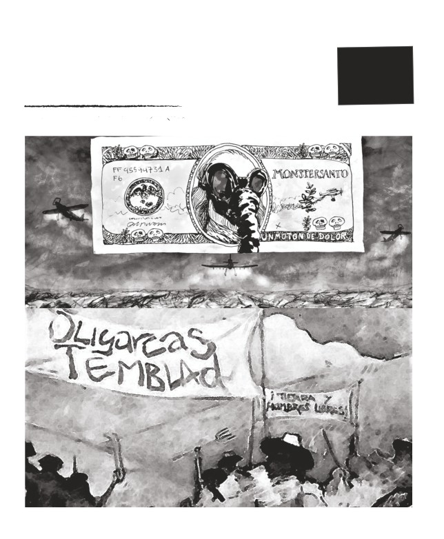
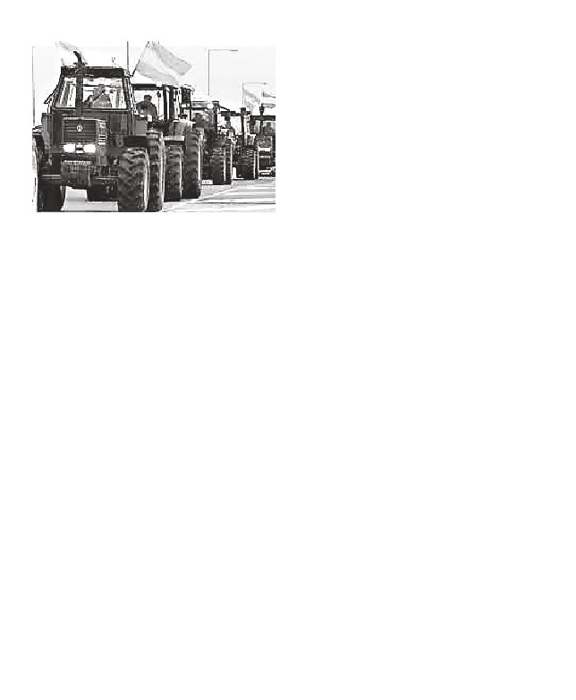
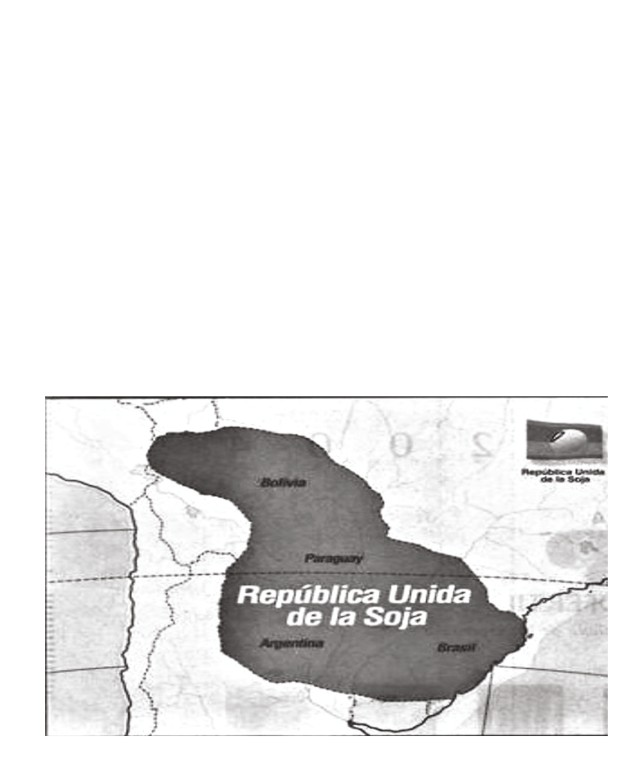

PARA LA DISCUSIÓN
Y ORGANIZACIÓN
$20
EJES
POPULAR
ENERO 2020
QUIÉNES SON LOS ENEMIGOS DEL PUEBLO Y QUÉ
GOLPE PREPARAN
“Queremos plantearle a los representantes
LOS HECHOS QUE ANTICIPAN LA
TORMENTA
de Coninagro y a la Sociedad Rural hacer un
cese de comercialización. Queremos saber su
opinión para no entorpecer la comunicación con
El 7 de enero los terratenientes y chac-
el Gobierno. Si estamos todos de acuerdo, lo va-
areros de las ciudades de Pergamino y Sal-
mos a hacer. Esto recién empieza, va a seguir.
liqueló, de la próspera zona norte y oeste
Las entidades nos van a guiar. Si es necesa-
de la provincia de Buenos Aires (pampa
rio, iremos a Buenos Aires con un tractorazo
húmeda), realizaron una protesta contra el
o un camionetazo” (Clarín y La Nación 8/1).
proyecto de suba de retenciones a la soja, el
El diario La Nación amplificaba además
maíz y el trigo, y del impuesto a la propiedad
las quejas de otros protestones ruralistas:
rural diseñados por los gobiernos Nacional
“No queremos bancar más la joda de nadie”; “Le
y Provincial del Frente de Todos. La marcha
siguen sacando al único sector productivo, y eso
de los tractores por la ruta y la asamblea pos-
va a llevar a menos producción”; y glosaba, final-
terior, que reunió unos trescientos propi-
mente, el reclamo de ajuste hecho por el presiden-
etarios en cada uno de esos partidos de la
te de la Sociedad Rural, Daniel Peregrina: “Aquí
zona núcleo, demandó a los referentes de la
el problema principal es el enorme gasto público,
Mesa de Enlace que “endurezcan la posición y
que supera los ingresos”.
anuncien un paro de comercialización, un lockout
Ni un mes había pasado de la asunción del
patronal como el que se hizo hace diez años”. El
nuevo Gobierno y ya estaba la Sociedad Ru-
documento redactado y leído por las enti-
ral, órgano de los grandes terratenientes,
dades agrarias amenazaba: “Vamos a reducir
comandando una movida desestabilizadora
nuestra producción, que hoy supera el millón de
de “a partes”. El “tractorazo” era la continu-
toneladas de granos, en por lo menos un 25%. Esto
ación de las movilizaciones y asambleas que
es un 25% menos de viajes de camiones, de con-
en diciembre habían desplegado al costado
sumo de combustibles, de movimiento comercial,
de las rutas las entidades patronales-rurales
de reparaciones, de venta de maquinaria agrícola
del NOA y NEA, y la Sociedad Rural de San
y de sus repuestos”.
Nicolás cuyos miembros rodearon a la es-
Inmediatamente después del mitín,
tratégica Ruta 9. Incluso, como vimos en la
Román Gutiérrez, uno de los organizadores
última edición del EJES… , tras la victoria del
del
“tractorazo” en Pergamino, afirmó:
2 →

El macrismo en la legislatura provincial
impidió que se sancione el proyecto men-
cionado para una más justa redistribución
del ingreso y para el desarrollo de la indus-
tria y el trabajo nacional, forzando cambios
que beneficiaron al sector más concentrado
de los propietarios (evitando que paguen
más lo que más tienen) y desfinanciando en
10.000 millones de pesos a la provincia. Tras
cuatro años de crimen económico ejecutado
por la gobernadora Vidal, la provincia de
Frente de Todos en octubre, las facciones
Buenos Aires debe afrontar este año ven-
políticas que responden directamente a
cimientos de deuda por 200.000 millones de
Washington, como Coalición Cívica y el
pesos, a lo que se suma un déficit de caja de
PRO, difundieron un amenazante video,
otros 200.000 millones de pesos.
cuyo relator advertía: “Que nadie se equivoque,
Cuando se terminó de votar la ley imposi-
aceptar la decisión de la mayoría no significa per-
tiva 2020 con las injustas modificaciones
mitir que nos pasen por encima. Estamos organi-
hechas por Cambiemos, el gobernador Ki-
zados y trabajando a lo largo y a lo ancho del país
cillof afirmó contundentemente: “No esta-
y al costado de las rutas, en cada ciudad y en cada
mos de acuerdo porque todas estas medidas
pueblo estamos conectados y alerta para respond-
desfinancian a la Provincia y favorecen a
er cualquier medida autoritaria y abusiva” (Ver
sectores concentrados. Fue su decisión política:
video en las redes sociales Campo+Ciudad).
cuando son oposición representan y defienden
Las medidas “arbitrarias y abusivas” que
a los mismos sectores para los que gobernaron.
motivaron la protesta y las amenazas de
Nuestro gobierno tiene prioridades distintas”.
boicot comercial contra el pueblo, tenían
Delante de la acción de los legisladores pro-
que ver con una justa actualización imposi-
vinciales, la oligarquía había desplegado su
tiva aplicada a los privilegiados propietarios
habitual modus operandi. Primero, preparó
rurales (centralmente) y motivada por una
el terreno ideológico sobre las confundidas
inflación anual del 56%. En el proyecto de
capas medias urbanas acusando al gobierno
Kicillof, el aumento de hasta un 75% en el
popular de aplicar medidas “confiscatorias
impuesto a los bienes rurales estaba dirigi-
contra los fatigados ruralistas”, para ben-
do al privilegiado 7% que detenta grandes
eficiar injustamente a los pobres (califica-
propiedades urbanas y a unos 300 ter-
dos como “vagos”). Luego inició el ciclo de
ratenientes que poseen más de 2.000 hec-
movilización y protestas desde las periferias
táreas. La mitad de las propiedades rurales
(NOA, NEA) donde son fuertes las entidades
recibirían aumentos por debajo del 65%.
medianas y pequeñas (CRA y FAA). Final-
← 3
mente detonó parcialmente con “tractora-
QUIÉNES SON LOS DUEÑOS DE LA
zos” y discursos subidos de tono en ciudades
TIERRA Y DEL NEGOCIO
de la zona núcleo (Pergamino, Salliqueló) en
AGROEXPORTADOR
las que domina la SRA, combinando este ac-
cionar con movilizaciones urbanas (como
Veamos la materia “contante y sonante”
fue el acto por la muerte de Nisman). De
que se oculta tras las altisonantes frases de
modo que en enero fueron preparando el
los grandes terratenientes.
terreno para atacar más furiosamente en
marzo y a lo largo del año, esperando que
Según se consigna en varios medios loca-
se trabe la importante negociación oficial
les, si un propietario de unas 200 hectáreas
con el FMI para refinanciar una deuda im-
invierte en la producción de granos en su
pagable con acreedores buitre y cuyo obje-
pequeño campo en la zona núcleo (pampa
tivo, el de la deuda, no fue otro que acogo-
tar la soberanía popular.
húmeda) dispondrá de una renta (por ser
dueño de la tierra) más una utilidad (por
haber realizado la inversión) del orden de
Veamos ahora, quiénes son los dueños de
los 480.000 pesos por mes (7.620 dólares
la tierra en la Argentina, a qué llaman caí-
por mes). Explica el artículo de “El Cohete a
da de la rentabilidad y por qué demandan,
la Luna” del domingo 19 de enero: “Esta cifra
como el jefe de la Sociedad Rural, ajuste en
se alcanza considerando que como el rendimien-
el gasto público y manos libres para concen-
to por hectárea es de 4,5 toneladas (45 quintales),
trar la renta agraria.
ese campo produce 900 toneladas de soja, lo que
multiplicado por $ 14.330 (227 dólares en ese
momento de cotización del grano) se genera un
ingreso bruto de $12.897.000. Si a esa cifra le
restamos las retenciones que le descuenta el aco-
piador/exportador, $ 3.869.100 (equivalentes al
30% de $12.897.000), le restamos gastos de es-
tructura por $ 1.512.000 ($ 7.560 por hectárea),
le restamos los gastos de cosecha por $ 756.000 ($
3.780 por hectárea) y le restamos $1.008.000 de
gastos de comercialización ($5.040 por hectárea),
nos da un margen de $ 5.751.900 por cosecha
de soja. Suponiendo que no haga nada más
en el campo y que trabaje solo esos 4 meses,
estamos hablando de un resultado neto men-
sual para todo el año de $479.325, habiendo ya
4 →
descontado impuestos nacionales, provinciales
que tienen establecimientos de más de 500
y tasas municipales”. El periódico cordobés
hectáreas son 18.000. Esto, dicho de otro
AgroVoz, confirma esos valores citando un
modo, significa que el 1% de las explotacio-
estudio del Inta de Marcos Juárez donde
nes rurales controla el 36% de la tierra (se
además demuestra que la rentabilidad del
trata de 57 millones de hectáreas). Son las
agro se triplicó en los últimos 40 años.
propiedades de más de 10.000 hectáreas.
En el otro extremo, las pequeñas chacras de
Ahora bien, veamos lo que se lleva el due-
menos de 100 hectáreas representan el 55%
ño de la tierra en calidad de renta agraria
de las explotaciones (son 125.000 fincas), las
diferencial en una zona fértil como la zona
que ocupan apenas el 2% de la tierra cultiva-
núcleo, descontando la parte que corres-
ble. En síntesis, se ve claramente un proce-
ponde a la ganancia que se lleva si realizó la
so de concentración de la tierra cultivable
inversión en maquinaria, semillas y fuerza
en cada vez menos manos.
de trabajo; descontando esto, observemos
la parte que se embolsa el dueño de la tie- Todo esto que acabamos de decir, puede
rra por ser, simplemente, el dueño. Según
ponderarse mejor en un ejemplo para nada
datos de la Bolsa de Cereales de Córdoba,
hipotético. Supongamos que el Sr. Bullrich
el costo de arrendamientos de 2019 fue de
ha heredado de sus antepasados (quienes
10 quintales por hectárea (una tonelada de
despojaron de sus tierras a gauchos e indios)
soja), es decir 244 dólares. En nuestro ejem-
1.000 hectáreas, que acrecentó con otras
plo 200 hectáreas alquiladas generan 48.800
1.000 casándose con la Sra. Álzaga (cuyos
dólares o al cambio oficial 3.146.400 pesos,
abuelitos también le robaron las tierras a los
que significan 260.000 pesos por mes al año,
habitantes de la patria), formando, según
sin hacer absolutamente nada. Un pequeño
establece la ley, una propiedad inquebran-
propietario que cuente con apenas 50 hectá-
table de 2.000 hectáreas de suelo altamente
reas para arrendar se lleva 65.000 pesos por
fértil (y que es el tamaño de los campos cu-
mes sin esfuerzos ni riesgos.
yos dueños debían pagar la reactualización
del impuesto rural propuesto por Kicillof).
Cabe preguntarse ¿cuántos son los dueños
Si Bullrich las arrienda a una empresa soje-
de la tierra en el país? A partir de los datos
ra que invierte en la producción de granos
del último Censo Nacional Agropecuario se
(grupos financieros yanquis denominados
sabe que sólo quedan 211.000 propietarios
pooles, en general), puesto que detentando
rurales en el país y que estos establecimien-
la propiedad de la tierra nada parece impe-
tos ocupan más de 86 millones de hectáreas.
dírselo, percibirá en calidad de renta agra-
El 50% de la producción sojera la generan
ria la contundente suma de 2.600.000 pesos
1400 productores con muchos miles de hec-
por mes… Pero si además decide invertir
táreas explotadas. Los que explotan de 100-
un capital en la producción de soja, el Sr.
200 hectáreas son 25.000, los que tienen o
Bullrich y la Sra. Álaga se despertarán
explotan 200-500 hectáreas son 32.000 y los
← 5

cada primero de mes con 4.793.250 pesos, y
soja”. De modo que, siguiendo con el ejem-
considerando que sólo explotaron la tierra
plo de las 200 hectáreas (que, recordemos,
los 4 meses de la campaña sojera (!!!); es de-
rinden 479.000 pesos al mes a su propieta-
cir, habría que sumarle a esos casi cinco mi-
rio), se requieren para cultivar allí apenas
llones de pesos mensuales los beneficios por
320 horas de trabajo al año. El análisis de
el uso mercantil de la tierra durante otros
Bragachini concluye que “los pooles de siem-
meses del año.
bra hasta pueden utilizar menos horas”. Los nú-
meros son lapidarios. No crean fuentes de
Suele argumentarse, también, desde las
entidades patronales del agro que el sector
trabajo, tampoco cae su rentabilidad ni sus
ganancias. La oligarquía cipaya y los pooles
más productivo (la producción agrícola ga-
dicen “todo para mí”.
nadera) no debe ser estorbada con graváme-
nes y regulaciones estatales porque al ser el
En síntesis, las familias de renombre
sector más dinámico de la economía nacio-
(como Pereyra Iraola, Martínez de Hoz,
nal es una indispensable fuente de empleo.
Bunge y Born, Pueyrredón, Unzué Larreta,
Contra este argumento falaz, el ingeniero
Bullrich, Fortabat, etc.), que forman parte
agrónomo del INTA Mario Bragachini dicta-
de la oligarquía vernácula, se opusieron ra-
mina que “hoy solo se necesitan 1,6 horas hom-
dicalmente a la actualización del 75% de los
bre/hectárea/año para producir una hectárea de
impuestos que gravan la tierra en la provin-
6 →
cia de Buenos Aires y a la suba de 5 puntos
EL SISTEMA DEL AGRONEGOCIO Y
aplicados a la exportación de granos. Son
EL IMPERIALISMO
200 terratenientes bonaerenses que con-
trolan más de 11 millones de hectáreas, Con todo, en nuestro país se fue conform-
entre los cuales hay 35 familias cuyas pro-
ando tras la dictadura genocida, y sobre
piedades superan las 20 mil hectáreas. El
todo con la política de apertura a las rela-
poder económico de este núcleo oligárquico
ciones carnales con los EE.UU. desplegada
vuelve chiquito y opaco a nuestro ejemplo de
en los noventa, un sistema agroindustrial
las 2 mil hectáreas.
complejo articulado por varias partes.
Sin embargo los ruralistas protestones,
montados sobre sus tractores, exigen más
1. Los grandes terratenientes de la zona
rentabilidad, que se ajuste la inversión
núcleo (las 200 familias que forman la oli-
pública, como reclamó el jefe de la Socie-
garquía terrateniente y participan de la So-
dad Rural, y se oponen a que en el país se
ciedad Rural Argentina) asociada al capital
desarrolle una industria y tecnología inde-
financiero (pooles de siembra gringos) pro-
pendiente de los centros imperiales. Socios
ducen en sus grandes haciendas y alquilan
menores del capital financiero yanqui y eu-
miles y miles de hectáreas de los pequeños
ropeo (pooles de siembra) que produce soja
propietarios chacareros (de la CRA y la FAA).
en la Argentina, replican la demanda de és-
La concentración de riquezas acaparada
tos. Los fondos de inversión estadounidense
bajo la forma de renta agraria (por ser due-
que se llevan al norte la riqueza aquí creada
ños de grandes extensiones de tierra muy
por los y las trabajadoras, bajo la forma de
fértil y donde se aplica alta tecnología) y de
ganancia en dólares, necesitan aspirar cada
ganancia por invertir en la producción de
vez mayores cuotas de riqueza social. En su
granos (utilidad del capital) crece a pasos
concepción, reflejo de su interés material,
agigantados y los números conmueven por
nuestro país es la tierra del fondo, el patio
su magnitud. También aumenta la concen-
trasero fértil, al cual hay que super-explotar,
tración de tierras en cada vez menos manos.
irracionalmente, aplicando tecnología y má-
Los medianos y pequeños pierden sus tier-
quinas sin empelar obreros y sin considerar
ras a manos de los grandes dueños.
el agotamiento de las tierras y su desertifica-
ción progresiva (situación que viene batien-
2. Los pooles de siembra: se trata de los
do récords en la pampa húmeda). Necesitan
fondos de inversión/capital financiero que
acumular más, llevarse muchos pesos con-
maneja la tecnología más avanzada en la
vertibles en dólares para alimentar su hiper
rama y que alquila las tierras para pro-
endeudada y quebrada economía del Norte.
ducir en las pampas. Son socios y herma-
nos mayores de la oligarquía. La oligarquía
← 7
es quien conoce el terreno, tiene capacidad
sociedades rurales del interior.
para crear consenso en la sociedad, no así los
capitales financieros quienes, no obstante,
5. Fundamentalmente, detrás de los pooles
detentan el capital y la tecnología de punta
y de los grandes terratenientes locales de la
para alcanzar los récords de productividad
SRA se parapetan, armados hasta las mu-
en la tierra argentina.
elas, los poderosos acreedores de nuestro
maltratado país. Son los grupos financieros
3. Las compañías agroquímicas/tóxicas
Black Rock (principal dueño de Netflix e im-
trasnacionales y de tecnología satelital-dig-
portante accionista de Bayer-Monsanto),
ital cuyos productos (semillas, pesticidas,
Goldman Sachs (con varios cuadros en el
abonos, drones, servicios satelitales para la
gabinete de Trump), Franklin Templeton
explotación de las tierras, etc) son decisivos
(que administra una cartera de activos por
para alcanzar los rindes de primer nivel de
más de un billón de dólares) PIMCO (el in-
la agricultura local. También se alimentan
versor de bonos más grande del mundo,
de la rentabilidad diferencial de las tierras
con activos de inversión por 2,5 billones de
pampeanas.
dólares), entre otros gigantes decadentes.
Todos ellos concentran la mayor parte de
la deuda externa argentina y administran
4. Los medianos y pequeños propietarios
volúmenes de recursos que superan en 30
de tierras que se han vuelto arrendatarios
veces el tamaño de la economía local.
rentistas, no explotan sus propios campos,
van perdiendo el conocimiento de cómo
hacerlo. Sus propiedades son absorbidas
Los grandes terratenientes, actores locales
en una constante tendencia por los grandes
del dominio de los capitales financieros yan-
terratenientes locales quienes los conducen
quis, jugaron sin pausa y con tenacidad una
como a víboras encantadas por los carriles
actividad ideológica contra el proyecto na-
del enfrentamiento político contra cualqui-
cional popular recientemente en funciones
er política de industrialización nacional-
de gobierno. Conscientes de su actual de-
popular. El misterio del encantamiento se
bilidad para coaligar una fuerza que sume a
reduce a los números de siete cifras que en-
sectores populares y obreros, como hicieron
gordan las cuentas bancarias de los chacare-
en el año 2008 (en la disputa contra la reso-
ros que se han convertido en propietarios
lución 125), los miembros de la oligarquía fi-
absentistas y rentistas millonarios. Su con-
nanciera/terrateniente jugaron sus cuadros
dición actual de rentistas los asocia estruc-
políticos y sus bandas sicarias con una meta
turalmente a los grandes terratenientes, pa-
exclusiva: fracturar el movimiento nacional
dres macabros que acabarán por expropiar a
popular para impedir su desarrollo hacia un
sus hijos asociados a Coninagro, FAA y a las
movimiento de liberación nacional y social.
8 →
capital financiero en nuestro país y de su
LOS PARTIDOS DE LA OPOSICION
AGRO-FINANCIERA JUEGAN A
carácter anti-democrático.
FRACTURAR AL MOVIMIENTO
NACIONAL POPULAR
2. Inmediatamente después del “tractora-
zo” en las ciudades sojeras los referentes tal-
Los partidos que representan en nuestro
ibanes del macrismo y de la Coalición Cívica
país a los intereses del capital concentrado
golpista organizaron un acto en conmemo-
trasnacional, como la Coalición Cívica, el
ración del fiscal Nisman cuya muerte per-
PRO y una importante facción del radicalis-
geñada por los servicios de inteligencia lo-
mo, que conduce a la UCR y la ha integrado
cales vinculados a la CIA estadounidense y
vergonzosamente a la alianza pro-imperi-
al Estado de Israel fue y es un estilete lanza-
alista “Cambiemos”, actuaron presionando
do sistemáticamente contra los dirigentes
en tres frentes con el objetivo de desestabi-
políticos del Frente nacional-popular, fun-
lizar y deslegitimar al Gobierno popular del
damentalmente contra Cristina Kirchner,
Frente Patriótico, pero fundamentalmente
en busca de su prisión y eliminación de la
buscando dividir las bases del movimiento
vida política nacional/regional. Los cebados
que se van coaligando en la medida en que
concurrentes, todos y todas de edad avanza-
participan de un proyecto industrialista in-
da, porteños y de sectores medios y medios
tegrador latinoamericano. Veamos de qué
altos afirmaban, frases del siguiente talante:
modo actuaron “los enemigos del pueblo”.
“Así matan los K... ¡Asesinos!”. Cabe señalar
que el acto no tuvo la concurrencia esperada
por los funestos organizadores y, central-
1. Como mencionamos más arriba, en
mente, las organizaciones de la comunidad
la legislatura de la provincia de Buenos
judía en la Argentina como la Delegación de
Aires el bloque Cambiemos impidió que se
Asociaciones Israelitas Argentinas (DAIA)
apruebe el paquete de actualización imposi-
y la Asociación Mutual Israelita Argentina
tiva diseñado por Axel Kicillof. Reciente-
(AMIA) decidieron no participar.
mente derrotados en las elecciones por una
diferencia abismal (15 puntos de diferen-
cia a favor del FdT) y habiendo dejado una
3. La desestabilización a través del cri-
provincia diezmada e hiperendeudada, los
men organizado. En Rosario las bandas
diputados y senadores provinciales del mac-
narcos asociadas a las fuerzas de seguri-
rismo y UCR logran trabar una medida im-
dad cometieron 20 crímenes en 20 días. La
portante de justicia social. Esto deja en claro
violencia política de la oligarquía financiera
la crisis del sistema político, que no puede
contra el pueblo en una provincia sojera y
expresar las demandas mayoritarias y popu-
que cuenta con el importante puerto de San
lares, y los límites históricos de la democra-
Lorenzo (totalmente bajo control de las cor-
cia representativa en esta fase de dominio del
← 9
poraciones trasnacionales) toma esta forma Los hechos de inseguridad que la oligar-
de crímenes narco. Rosario y su territorio
quía financiera desata y que forman parte
obrero y humilde que lo rodea se ha conver-
de una trama política-policial-empresarial
tido desde hace una década en el globo de
de crimen organizado se suma a un relato
ensayo de la política imperial de bandas ar-
sistemático sobre la conjeturada “corrup-
madas cuyos sicarios responden en última
ción” y la supuesta “ineptitud” de los cuadros
instancia a los jefes del capital monopólico
políticos en el gobierno más comprometidos
y a sus mediadores de la oligarquía local.
con la causa de la liberación. La persecución
Los crímenes que se realizaron en estos días
judicial contra Cristina y contra otros com-
son la acción deliberada de la oligarquía que
pañeros, muchos de ellos sufriendo aún el
logró, tras una campaña de miedo hacia la
confinamiento como presos políticos de la
población, copar los barrios con la Gendar-
oligarquía; y los ataques dirigidos a Kicillof
mería (cuyos jefes homenajearon a la reina
y a la Ministra de Seguridad Nacional, Sa-
del “gatillo fácil por la espalda” Patricia Bull-
bina Frederic, en los insultantes editoriales
rich). El editorial del oligárquico diario La
de La Nación y en las notas de Clarín, son un
Nación publicó su línea desestabilizadora
claro ejemplo de esto que decimos.
defenestrando al nuevo gobierno peronista
de la provincia y a la flamante ministra de
Seguridad: “El Estado provincial no muestra
reacción y tampoco parece preparado para en-
frentar estos nuevos desafíos que impone la crimi-
nalidad asociada con el narcotráfico en este tipo
de trama urbana”.
En síntesis la oligarquía financiera se en-
camina a una dura y tenaz lucha orientada
a desestabilizar socialmente y generar una
crisis de gobernabilidad. Juega todas sus
fichas para fracturar a los sectores medios,
pauperizados por la política del macrismo
pero fácilmente impresionables ante el
agravamiento de la inseguridad y la violen-
cia “de los de abajo”, del mismo modo influ-
enciables con campañas mediáticas contra
los pibes más empobrecidos de nuestro país
a los que el enemigo califica de “chorros”.
10 →
TENEMOS UN GRAN DESAFÍO POR DELANTE: TRABAJAR POR LA UNIDAD
DEL MOVIMIENTO DE LIBERACIÓN-DEMOCRÁTICO PARTICIPATIVO
La ofensiva de este golpe de “a partes”
barrio, de los pibes de los territorios, etc.,
pergeñado y dirigido por el capital finan-
sacudiendo disputas intestinas, atizando la
ciero y la oligarquía local tiene como obje-
pelea entre trabajadores, pobres contra po-
tivo cortar el desarrollo de un movimiento
bres.
emancipador que coloque como eje, en
un primer momento, la recuperación de
Por todo esto es central:
la renta agraria diferencial y el control del
movimiento destructivo del capital foráneo.
1. Trabajar por la UNIDAD DE LOS TRA-
La acción sistemática y sin descanso de los
BAJADORES y por la UNIDAD DEL MOV-
enemigos del pueblo es empujada por una
IMIENTO NACIONAL POPULAR. La unidad
crisis capitalista de dimensiones históricas.
se realiza en la práctica, es un problema de
Imposibilitados de realizar sus ganancias
resolución práctico. Es la unidad contra el
en el mercado mundial, los capitales más
enemigo del pueblo. Una práctica que ponga
concentrados del mundo se nos vienen con
en el centro la realización del interés común
sus garfios afilados porque o engordan ellos
de los y las trabajadoras y de los sectores
o nos desarrollamos como pueblo libre no-
populares. Interés que choca con el de la
sotros y nosotras. Su acción ahora será di-
oligarquía financiera/terrateniente confis-
vidirnos agitando fantasmas por ellos gen-
cadora de fatigas ajenas. Nos convocamos a
erados (como vimos recién) y empujando el
desarrollar ámbitos de participación política
estallido motorizado por reclamos parciales
de los compañeros y compañeras dispuestos
(salariales, demandas de bienestar social in-
a discutir y actuar en correspondencia con
satisfechas en lo inmediato).
las problemáticas de la educación, la salud,
la seguridad, el trabajo y la cultura que ex-
En Moreno, por ejemplo, se ha desatado
prese y permita desarrollar la consciencia de
en las primeras dos semanas de enero una
trabajadores. En síntesis, con quienes estén
“ola de delitos” en la escuelas. Ya sabemos la
dispuestos y dispuestas a cambiar nuestros
sensibilidad popular que se mueve cuando
hábitos individualistas forjados por décadas
atacan una escuela en Moreno, tras el cri-
de propaganda y bombardeos mediáticos
men de Estado de los compañeros Sandra y
diseñados y distribuidos por las usinas cul-
Rubén. Los robos en una docena de colegios
turales y las academias imperiales.
no es una casualidad, ni tampoco es obra
de la delincuencia común. Los sectores de
Vistos los límites de la actuación de la leg-
poder económico apuestan a colocar el eje
islatura bonaerense, los y las trabajadoras
en la “culpabilidad” de los laburantes del
← 11
pujamos por ámbitos de democracia par-
3. Para todo esto es necesario profundizar
ticipativa y directa donde las decisiones y
el debate y el estudio de las problemáticas,
las acciones del pueblo se impongan sobre
sus contradicciones profundas, universales
los acuerdos “por arriba” que mantienen
y su despliegue en contradicciones particu-
los privilegios que nos han llevado a esta
lares. Nuestra historia americana y nacion-
ruina. Es vital apoyar a los compañeros y
al, nuestros aciertos y límites como clase
compañeras del Frente de Todos en fun-
obrera y como movimiento de liberación.
ciones y que se enfrentan a los verdaderos
Participar como “soldados de ideas” de un
“enemigos del pueblo”. Pero sabemos que la
gran debate fraterno entre laburantes y
profundización de la democracia se realiza
miembros de nuestro pueblo con quienes
de “abajo hacia arriba” y que este proceso
vamos tomando conciencia, y participando
deberá cristalizarse en un radical cambio
en consecuencia, de cuál es nuestro interés
en la Constitución Nacional que tome como
histórico y a qué intereses antagónicos en-
antecedente necesario la Constitución de
frentamos. Nos convocamos todos y todas a
1949 donde se postuló como constitucional
crear y desarrollar una permanente batalla
los derechos de los trabajadores, el carácter
educativa, artística y cultural que tenga pro-
inalienable de los recursos estratégicos y la
fundas raíces en la historia y aprendizajes
función social de la propiedad (el interés
de nuestra clase y pueblo donde aprenda-
común por sobre la ganancia privada).
mos a definir nuestros intereses profundos,
comunes, de pueblo trabajador y actuemos
en correspondencia con éstos.
2. Estamos alerta ante cualquier acción de
boicot y/o bloqueo comercial que desabas-
tezca a los barrios y ciudades de alimentos,
La batalla de ideas y cultural es central para
medicamentos, fuentes de energía (todos
emanciparnos. Si está acompañada de una
ellos en manos de las corporaciones tras-
práctica que coloque como meta el buen vi-
nacionales y los grupos más concentrados
vir, organizándonos colectivamente, para
locales). Para esto la discusión permanente
resolver las problemáticas de todos los tra-
entre los y las trabajadoras es vital. Para su-
bajadores y del pueblo en su conjunto.
perar esta situación de ataque al pueblo la
participación activa y creativa de los y las
vecinas y los trabajadores de las ramas será
la única solución “para adelante”.
EJES PARA LA DISCUSIÓN Y ORGANIZACIÓN POPULAR. ENERO 2020